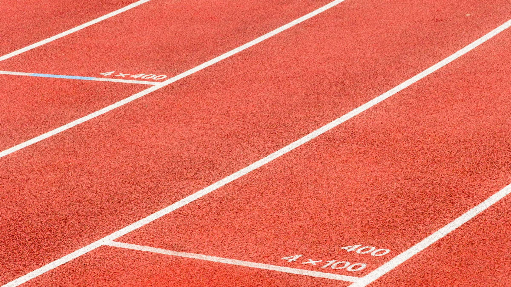

Athlete profile
A standout recruiting profile and highlight video that shows coaches exactly what you bring.

We mentor young athletes through college recruiting: building your profile, connecting you with the right coaches, and guiding you all the way to signing day.
01 · Colour
02 · Typography: Barlow Condensed + Inter
displaySigning dayh1h2h3h4leadThe recruiting process is confusing. We make it clear for athletes and parents.
bodyEvery athlete starts with an honest assessment of where they stand: marks, academics and the programs that are a realistic fit. From there we build a plan, open doors with coaches and stay with you until you commit. Read more.
eyebrowAthlete story03 · Buttons & badges
04 · Cards & stats
A standout recruiting profile and highlight video that shows coaches exactly what you bring.
We identify programs that fit you athletically and academically, and get you in front of their coaches.
Visits, eligibility, offers and scholarship decisions: we guide you and your family through every step.
05 · Form
07 · Feature video
06 · Spacing (4px base)
space-2 · 8pxspace-4 · 16pxspace-6 · 32pxspace-8 · 64pxspace-10 · 128px